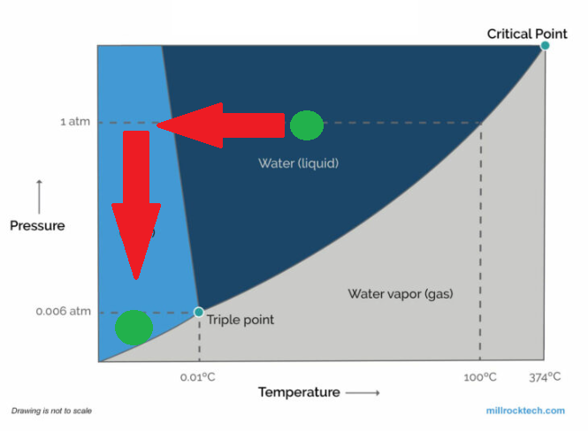
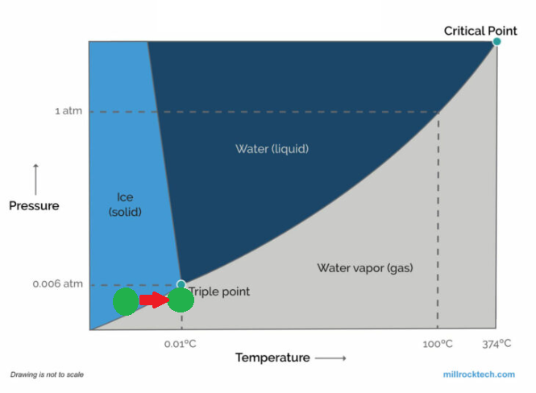

Module 1: Trees & Freeze Dryers
Part 2: Freeze Dryers
Temperature and Pressure
Two primary factors, namely temperature and pressure, dictate the phase (solid, liquid, or gas) that a substance will assume. To transition to a specific phase, both temperature and pressure must fall within certain thresholds. In the absence of these conditions, the substance cannot adopt that particular phase. The accompanying chart illustrates the requisite pressure and temperature parameters for different phases of water. As depicted in the chart, water can exist in a liquid state at sea level (where pressure equals 1 atm) if the temperature falls between the freezing point at sea level (32 degrees Fahrenheit or 0 degrees Celsius) and the boiling point at sea level (212 F or 100 C). However, if the temperature rises above 32 F while maintaining atmospheric pressure below 0.06 atmospheres (ATM), the water reaches a sufficiently warm state for thawing, yet lacks the requisite pressure for liquid formation, thus transitioning into a gas.
Sublimation
Freeze-drying relies on the concept of sublimation, the direct transition of a solid substance into a gas. Similar to evaporation, sublimation takes place when a molecule acquires adequate energy to break away from its neighboring molecules. Water undergoes sublimation from its solid state (ice) to its gaseous state (vapor) when its molecules attain the necessary energy to break free, yet the conditions are unsuitable for the formation of a liquid phase.
Freeze Drying Process
A freeze dryer contains a freeze-drying chamber equipped with multiple shelves linked to heating elements, a freezing coil connected to a refrigerator compressor, and a vacuum pump. In most machines, the substance intended for preservation is positioned on the shelves while still unfrozen. Upon sealing the chamber and initiating the procedure, the compressors activate to reduce the chambers temperature. The material solidifies as it freezes, thereby isolating the water from its surroundings at a molecular level, despite the waters continued presence. Subsequently, the machine activates the vacuum pump to expel air from the chamber, reducing the atmospheric pressure to below 0.06 ATM. Meanwhile, the heating units gently apply heat to the shelves, prompting the ice to undergo a phase change. Given the low pressure, the ice transitions directly into water vapor. This vapor exits the freeze-drying chamber, passing over the freezing coil where it condenses into solid ice, akin to water forming frost on a chilly day. This cycle persists for numerous hours, allowing the material to gradually desiccate. The protracted duration of the process is essential as excessive heating can alter the materials composition and structure significantly. Moreover, hastening the sublimation process may generate more water vapor within a given timeframe than the pumping system can effectively remove from the chamber, potentially reintroducing moisture to the material and compromising its quality. Upon achieving sufficient dryness, the material is sealed within a moisture-free package, often supplemented with an oxygen-absorbing substance. If securely sealed, the material can remain shelf-stable for an extended period, retaining its integrity until rehydrated with a small amount of water (though minute moisture traces may remain, leading to eventual spoilage). Under ideal circumstances, the substance undergoes the entire process with minimal alteration.
Question 1:
Why does the chemistry transition from a solid straight to a gas instead of becoming a liquid first?
Freeze Drying Steps:
1. Freeze
2. Primary Dry
3. Secondary Dry
Freeze
Freeze drying is a process that removes water from a substance. The freeze dryer lowers the temperature, causing the water to form ice. When the water solidifies, it separates molecularly from the chemistry while remaining present in the pouch.
Primary Dry (sublimation)
The next stage is primary dry, also known as sublimation, during which the pressure decreases significantly while slight heat is applied to the substance to facilitate the sublimation of water. The vacuum in the freeze dryer accelerates this sublimation process by removing the water vapor from the chamber. Furthermore, the freeze dryers cold condenser offers a platform for water vapor to attach and solidify back into ice, safeguarding the vacuum pump from water vapor. Roughly 95% of the moisture within the substance is eliminated during this phase. Primary drying progresses slowly so that the majority of water can be pulled from the substance.
Secondary Dry (adsorption)
In the final phase, known as secondary drying or adsorption, the focus is on eliminating ionically-bound water molecules. By elevating the temperature beyond that of the primary drying phase, the bonds between the material and water molecules are disrupted. This ensures the retention of a porous structure in the freeze-dried materials. Typically, most substances can be dried to achieve a residual moisture content of 1-5%.
Question 2:
What is the purpose of secondary dry?
Freeze Dryer Operation
Freeze Dryer Protocol
During each phase of the freeze drying protocol, there are steps that the freeze dryer progresses through. Protocol steps can be thought of as the steps of any recipe. Each one is an important event that must occur for the water to be successfully removed from the chemistry. For each step, there's a duration and required temperature. The final freeze and drying phases also have a required pressure. For the protocol to progress through a step, the internal temperature and pressure must reach the listed value in that step. Additionally, the freeze dryer must remain in that step for the listed time.
Loading Step
To start the freeze drying process, you will load the protocol on the freeze dryer.
Freeze Phase
The freeze phase consists of two steps followed by a final freeze. Step 1 starts out by dropping the temperature of the product to -60 C. Once that step has successfully completed, step 2 commences by holding the product at that temperature for 240 minutes. After 240 minutes have passed, final freeze happens, activating the vacuum and removing the internal pressure down to 500 mT.
Primary & Secondary Dry
The drying phase gradually warms the product back up while simultaneously removing the air and water vapor inside the chamber. The freeze dryer increases the temperature to -40 C, then holds that temperature for 3 hours. The temperature is then increased to -25 C for 10.5 hours! The temperature is increased again bringing it up to 0 C for 1 hour, then 25 C for 2 hours.
Finish Loading
When the freeze dryer has been fully loaded with product, you will select the green button labeled "Finished Loading". This ends the loading step and begins the remainder of the protocol. Make sure that each shelf in the freeze dryer is filled! Use empty racks to fill any unfilled shelves.
Practice Problem 1:
q3
Practice Problem 2:
q4
Practice Problem 3:
q5